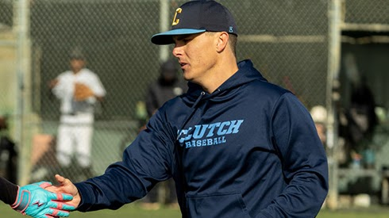
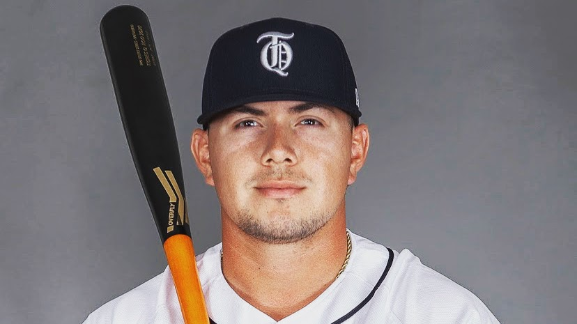
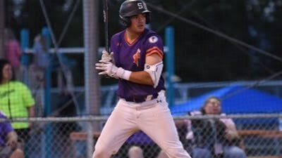
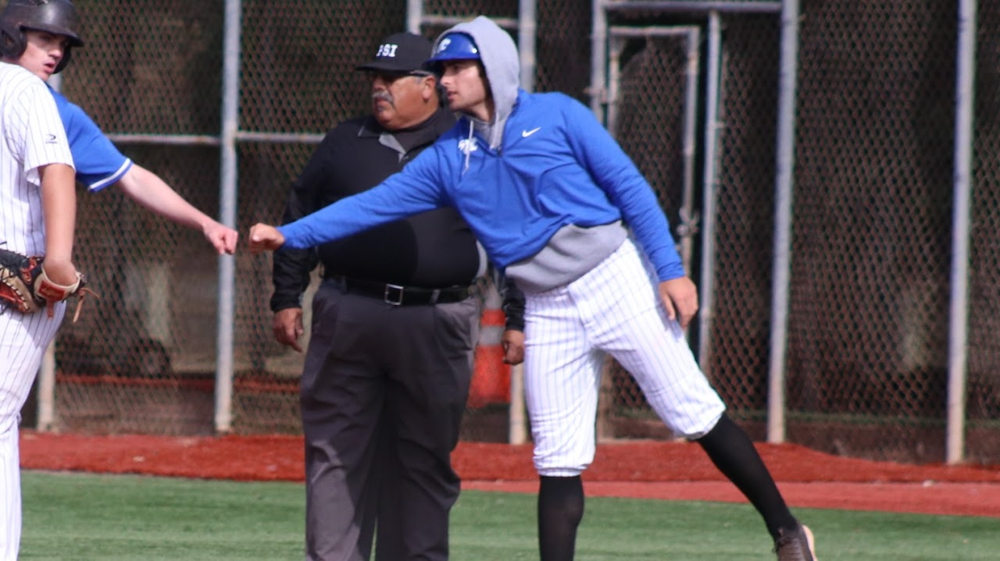

Our program focuses on more than just baseball—we specialize in skill training and player development while building life skills that extend beyond the field. Through focused coaching and a positive environment, players learn the value of teamwork, commitment, and how to overcome adversity. We're here to help athletes grow not only as players, but as confident, resilient individuals.
Our Coaches

Kyle's playing career includes notable achievements, such as being named Peninsula Athletic League MVP at Carlmont HS and receiving the Triple Crown Award. He earned All-American honors at Skyline College and was recognized with All-Big West accolades at D1 California State University, Northridge where he held a career .326 batting average. While at CSUN, Kyle earned his Bachelor's degree in Economics.
Following his collegiate career, Kyle transitioned into coaching, joining the CSUN coaching staff to mentor hitters and serve as the team's first base coach during games. Specializing in infield and hitting, Kyle has spent the past five years coaching youth baseball, focusing on skill development while emphasizing personal development and teamwork. In 2023, he took on the role of Head Varsity Coach at Woodside Priory, where his leadership has propelled the program to new heights. Under his guidance, the team achieved a 30-5 record, two league championships, and secured its first-ever CCS appearance and victory.

Coach Enriquez is a former All-Conference catcher at Skyline College and Oklahoma Baptist University, bringing advanced playing and coaching experience to Clutch Baseball. He also competed professionally in Mexico, where he developed a deep understanding of the game's mental and technical demands. Ramon is passionate about teaching catchers, refining fundamentals, and developing confident, competitive players.

